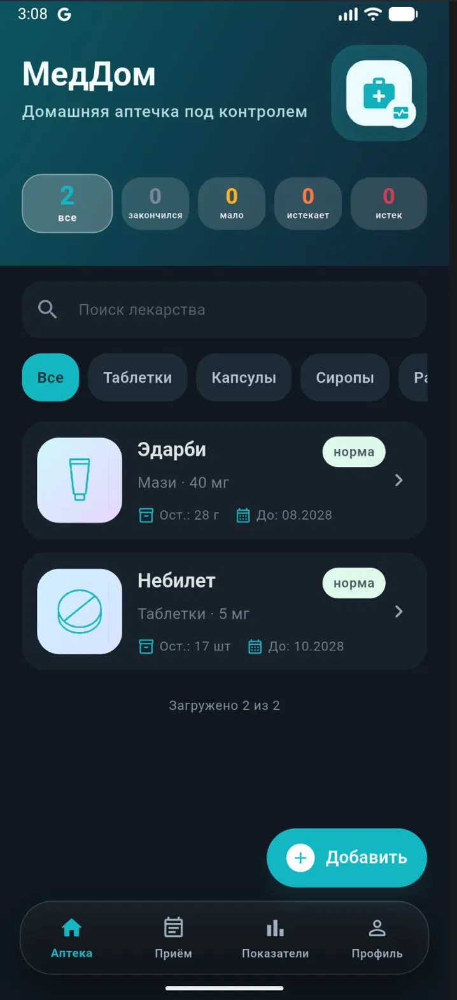
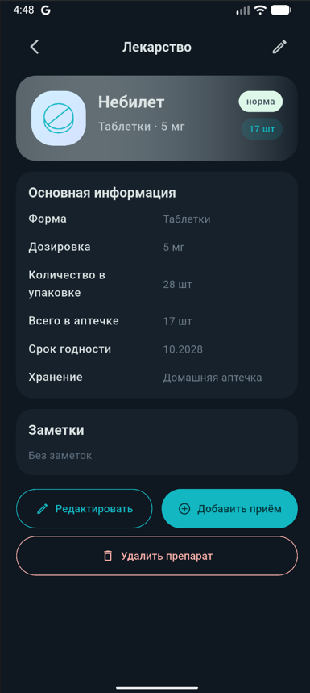
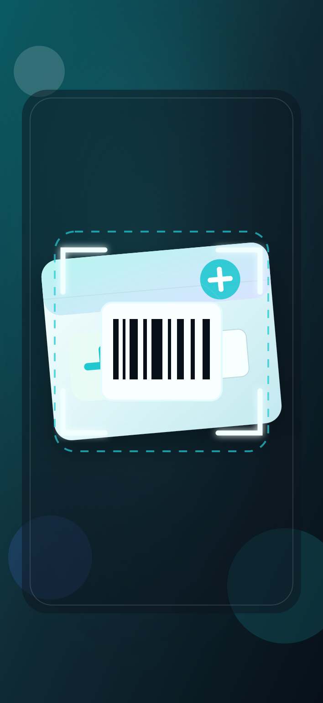
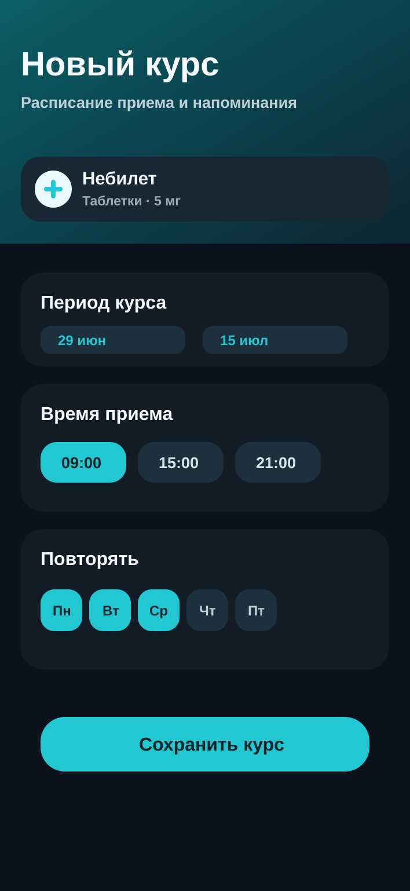
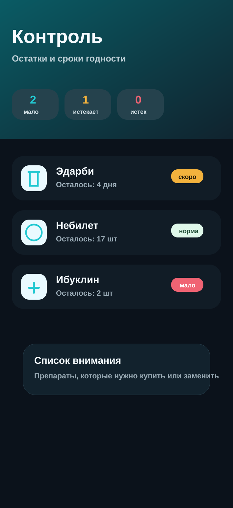
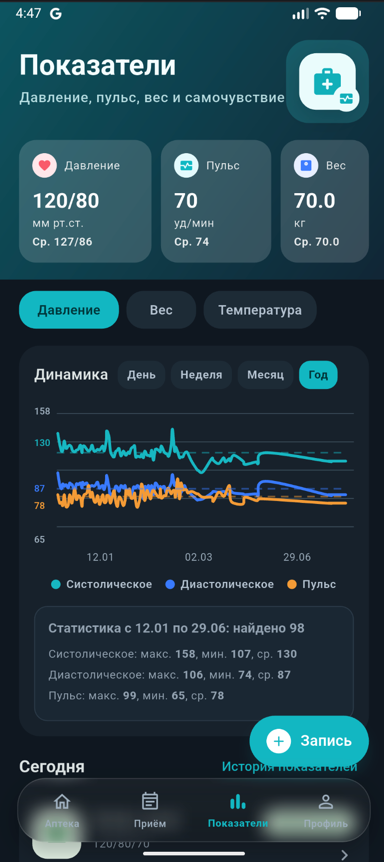
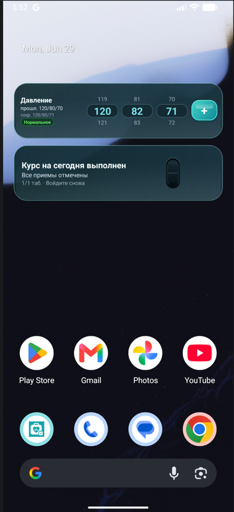

МедДом
Домашняя аптечка под контролем
Главный экран показывает все препараты домашней аптечки, остатки, категории и сроки годности в одном спокойном каталоге.
Сроки годности
Напоминания
Динамика здоровья
Главный экран показывает все препараты домашней аптечки, остатки, категории и сроки годности в одном спокойном каталоге.
Карточка препарата
Форма, дозировка, количество в упаковке, общий остаток, срок годности и место хранения видны сразу. Из карточки можно быстро добавить прием.
Быстрое добавление
Наведите камеру на штрихкод, QR или DataMatrix. МедДом считает код и поможет быстрее заполнить карточку препарата без лишнего ручного ввода.
Прием
Выберите препарат, период курса, дни недели и время приема. Приложение напомнит о лекарстве и покажет прогресс курса.
Запасы
МедДом подсвечивает препараты с малым остатком, истекающим сроком годности и уже просроченные позиции.
Показатели
Записывайте показатели здоровья и смотрите график за нужный период. Так легче заметить изменения и показать историю врачу.
Виджеты
Виджеты помогают добавить показатели давления и проверить статус курса приема без открытия приложения. Важные действия остаются на расстоянии одного касания.







Скачать
Выберите платформу. Если релиз еще проходит модерацию, плитка приведет на страницу ожидания или будет обновлена после публикации.
Возможности
Приложение помогает навести порядок в домашней аптечке и превращает разрозненные напоминания в понятный ежедневный процесс.
Добавляйте препараты домашней аптечки, дозировки, формы выпуска, количество и срок годности.
Все препараты под рукойСоздавайте расписание лечения и получайте напоминания, чтобы не пропускать прием.
По дням и времениСохраняйте давление, пульс, вес и самочувствие, отслеживайте динамику по периодам.
История измеренийВидите, что заканчивается, что истекает, и какие препараты пора обновить.
Меньше просрочкиНапишите нам.